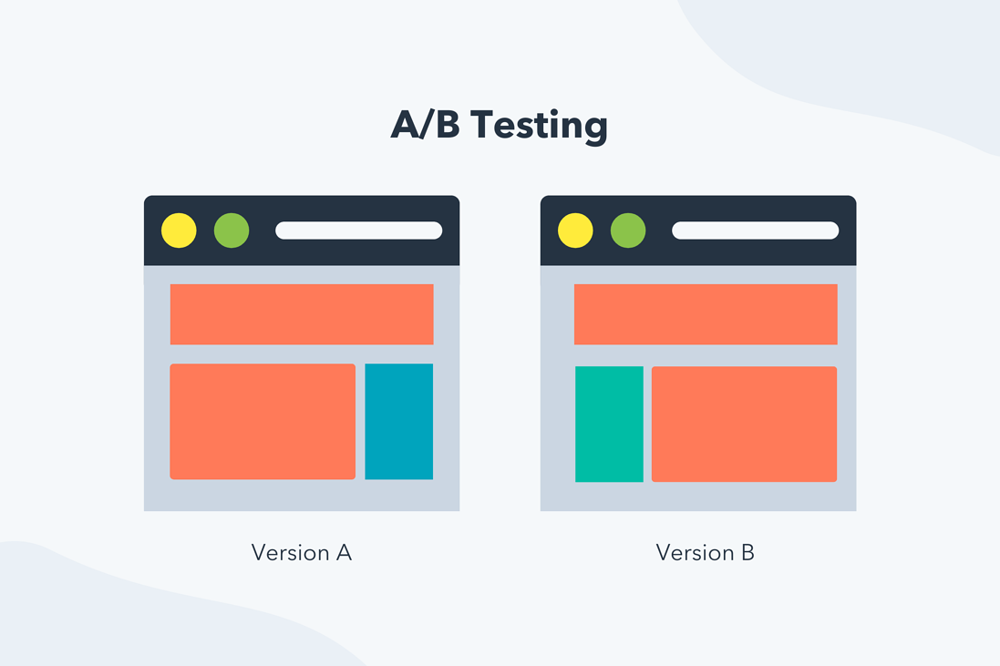
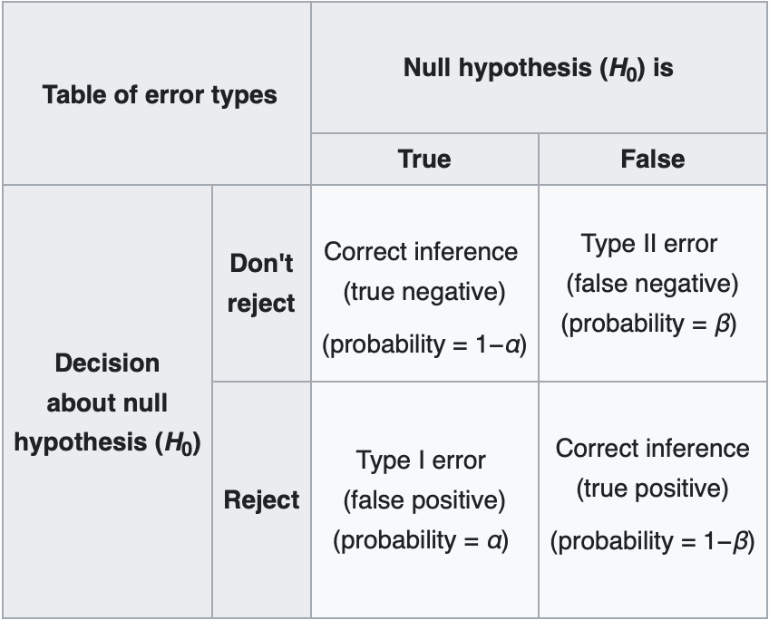
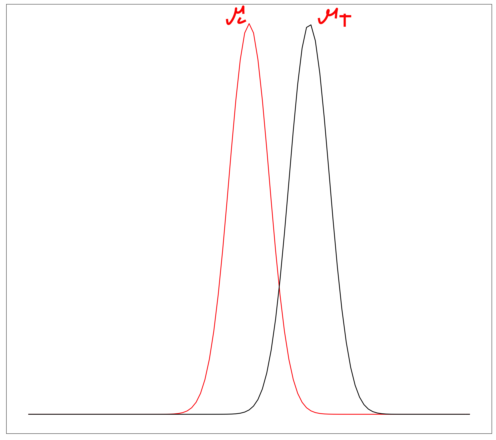
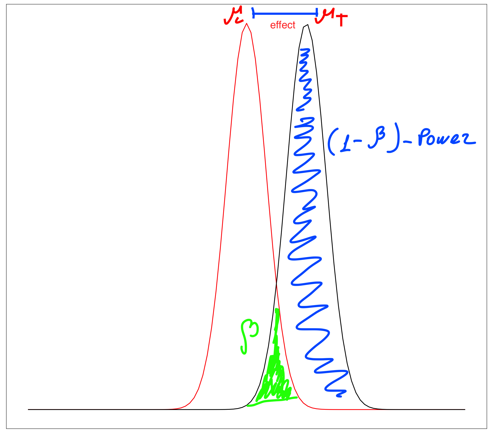
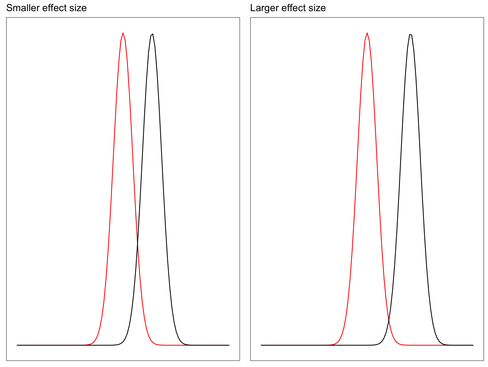
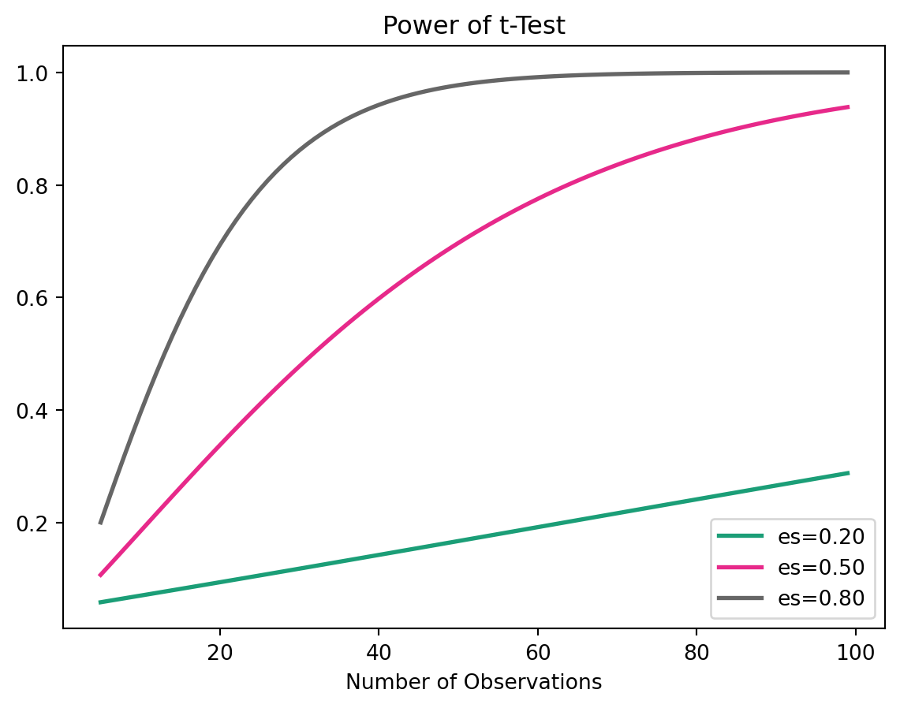
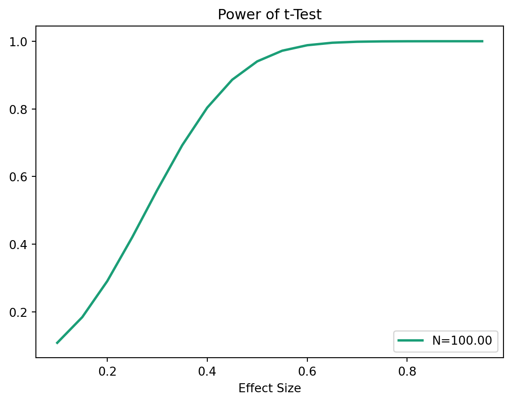
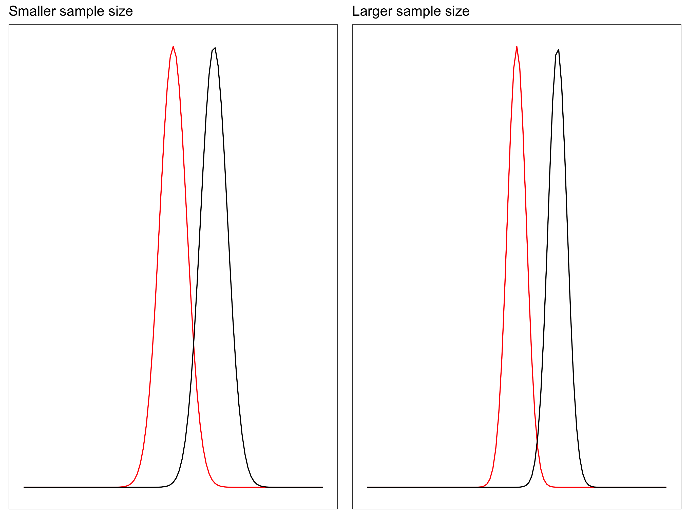

In this session we will cover the following topics:
What is A/B testing?
A/B testing steps
Statistics Review
Hypothesis testing with Python
Multivariate testing
Tip
Before you start, make sure to read the Statistics Session 6 materials, as we will be using the concepts of hypothesis testing and p-value in this session.
What is A/B Testing?
A/B Testing is a simplified term for randomized controlled experiment, where two samples (A and B) of a single object (product/service) are compared.
Have you ever seen the same website with multiple designs during a certain period of time?

Applications of A/B Testing
User Experience (UX): Testing Software Navigation, Color, Shape of the components
Marketing: Testing the content of a campaign
Drug Development: measuring the effect of the drug compared with either its competitors or placebo
\[\downarrow\]
practically everywhere
Important
In order to give an answer, we need to run an experiment!
Remember the Zen of Python:“In the face of ambiguity, refuse the temptaticon to guess.”
A/B Testing Steps
In general, A/B testing is done with four sequential steps:
Choose and characterize metrics to evaluate your experiments:
What do you care about?
How do you want to measure the effect?
Power Analysis:
Significance level (\(\alpha\))
Statistical power (\(1-\beta\))
Practical Significance level
Calculate the required sample size
Sample for control/treatment groups and run the test
Analyze the results and draw valid conclusions
Choosing metrics | Step 1
We have two types of metrics:
Invariant metrics - do not change from control to treatment groups
Evaluation metrics - the ones in the change of which we are interested.
Four categories of metrics:
Sums and counts
Distribution (mean, median, percentiles)
Probability and rates (e.g. Click-through probability, Click-through rate)
Ratios: Return on Investment (RoI)
Power Analysis | Step 2
The power of the test (\(1-\beta\)) is the probability of rejecting the \(H_0\) when it is False.

Statistical Power
We use power to calculate the sample size we need. In general, we have the following parameters:
Power of the test (\(1-\beta\))
Significance level (\(\alpha\))
Effect size (\(\delta\))
Sample size (\(n\))
Note
If you determine any three, the forth will be calculated and derived naturally
The rule of thumb for \(1-\beta\) is 0.8, which means that we have 80% chance of rejecting the \(H_0\) when it is False.
Effect Size
Effect size:
\[H_0: \mu_1=\mu_2\]\[H_1: \mu_1\ne\mu_2\]
Sometimes we want to reject the \(H_0\) with a certain effect, for example when \(|\mu_1-\mu_2|>\delta\)
Effect size use case
The news broadcasting company is testing whether users stay longer on their website with the new website design. The control group consists of visits to the old website, while the treatment group consists of visits to the new website. The new design will be considered effective if the difference in the average duration of the stay is more than 5.5 minutes; thus \(\mu_t-\mu_c >5.5\), the 5.5 here is the effect.
The effect that we want to detect is 5.5, while the effect size is standardized by the standard deviation: \[d = \frac{|\mu_t-\mu_c|}{\sigma}\]
T-Value
The degree of difference relative to the variation in our data groups.
Large t-values indicate a higher degree of difference between the groups.
P-Value
P-value measures the probability that the results would occur by random chance. Therefore, the smaller the p-value is, the more statistically significant difference there will be between the two groups.
Sample size
Sample size will be determined by the below formula:
\(Z_{1-\alpha/2}\) is the z-score corresponding to the desired confidence level (e.g., for a 95% confidence level, \(Z_{1-\alpha/2} \approx 1.96\))
\(Z_{1-\beta/2}\) is the z-score corresponding to the desired power level (e.g., for 80% power, \(Z_{1-\beta/2} \approx 0.84\))
\(Effect \text{ }Size\) is the standardized effect size, calculated as the difference in means divided by the standard deviation.
\(n\) is the required sample size per group.
Random Sampling | Step 3
Once we have determined the required sample size, we can randomly assign users to either the control or treatment group.
This randomization helps to ensure that any differences observed between the groups can be attributed to the treatment effect rather than confounding variables.
Let’s say we have the following DataFrame:
print(f'The shape of the Dataframe: {df_sampling.shape}' )print(f'The columns of the Dataframe: {df_sampling.columns}' )df_sampling.head()
The shape of the Dataframe: (100, 3)
The columns of the Dataframe: Index(['user_id', 'category', 'score'], dtype='str')
n must be less than or equal to the smallest group size in the original DataFrame. In this case, since category C has only 14 samples, we can sample at most 20 from each category.
df_sampling['category'].value_counts()
category
A 53
B 33
C 14
Name: count, dtype: int64
Splitting the data into control and treatment groups
import numpy as npimport pandas as pdimport mathfrom statsmodels.stats.power import TTestIndPowerfrom statsmodels.stats.multitest import multipletestsfrom scipy.stats import ttest_indimport scipyimport matplotlib.pyplot as plt
Tip
Do not forget to install the required packages before running the code.
Make sure that you are in the correct virtual environment, and run the following command in your terminal:
bashpip install statsmodels scipy
NOTE: you must run the above command in your terminal, given the fact that the your virtual environment is activated.
Calculating Sample Size
How much sample do you need to take, if you want to detect effect size of \(0.4\), with the power of \(0.8\) and significance level of \(0.05\) ?
You will do two independent samples t-test.
N = TTestIndPower().solve_power(effect_size =0.4, power =0.8, alpha =0.05)N
99.08032514659006
Note, sample size is per group 100
Sampling distributions
Sampling distribution of the means for two groups (control and treatment):
\[H_0: \mu_c=\mu_t\]\[H_1: \mu_c\ne\mu_t\]


Power
Relationship between power and effect size: There is a direct relationship between power and effect size: Increasing the effect size will increase power.

TTestIndPower().plot_power(dep_var='nobs', nobs=np.array(range(5, 100)), effect_size=np.array([0.2, 0.5, 0.8]), title='Power of t-Test')

Plot power and effect size using python, sample size = 100
TTestIndPower().plot_power(dep_var='effect_size', nobs= [100], effect_size=np.arange(0.1, 1, 0.05), title='Power of t-Test')

Increasing sample size will also increase the power, as with the higher sample size the sampling distribution of the mean becomes narrower. Recall, the standard deviation of the sampling distribution (Standard Error) of the mean is calculated as: \[SE = \frac{\sigma}{\sqrt{n}}\]

Hypothesis Testing
TipUse case
The news streaming company is adding a new feature to the website. The effect the company is trying to detect is equal to 5 minutes.
It is a randomized experiment, meaning that every visitor to the site will have 0.5 probability of being in the treatment (new feature) group and 0.5 probability of being in control group (old design).
The minimum effect they want to detect is an increase by 5 minutes.
From the historical data they have estimated the standard deviation to be 13.7 minutes.
The Function below computes the t-value and p-value for two independent samples using the formula for the t-statistic and the survival function from the scipy.stats module to calculate the p-value.
# t-test for case 1c1=measures(case1)ttest(*c1,20)
('t-value: -5.3065', 'p-value: 0.0000')
Important
However, the t-test shows that there is a significant difference between the two groups, with a t-value of 2.8284 and a p-value of 0.0050. This is because the low variance in the data makes it easier to detect even small differences between the groups, leading to a statistically significant result.
Now we will apply the t-test to case 2, which has a huge sample size of 20,000, however at first will will start with smaller sample size to see how the results change with the increase of the sample size.
N=200
c2=measures(case2)ttest(*c2,200)
('t-value: -0.3593', 'p-value: 0.7197')
N=200
c2=measures(case2)ttest(*c2,200)
('t-value: -0.3593', 'p-value: 0.7197')
N=2000
c2=measures(case2)ttest(*c2,2000)
('t-value: -1.1363', 'p-value: 0.2560')
N=20000
c2=measures(case2)ttest(*c2,20000)
('t-value: -3.5933', 'p-value: 0.0003')
Important
As we can see, as the sample size increases, the t-value increases and the p-value decreases, leading to a statistically significant result. This is because with a huge sample size, even very small differences between the groups can become statistically significant, which may not be practically significant in real-world terms.
A/A Testing
A/A testing is a type of experiment where two identical versions of a product or service are compared to each other. The purpose of A/A testing is to validate the experimental setup and ensure that there are no biases or confounding factors that could affect the results of future A/B tests.
Multiariate Testing
Case Study | Fast Food Chain
Problem Scenario
Which promotion was the most effective?
A fast food chain plans to add a new item to its menu. However, they are still undecided between three possible marketing campaigns for promoting the new product. In order to determine which promotion has the greatest effect on sales, the new item is introduced at locations in several randomly selected markets. A different promotion is used at each location, and the** weekly sales** of the new item are recorded for the first four weeks
The description of the data set:
The data set consists of 548 entries including:
MarketId: an inhouse tag used to describe market types, we won’t be using it
AgeOfStores: Age of store in years (1–28). The mean age of a store is 8.5 years.
LocationID: Unique identifier for store location. Each location is identified by a number. The total number of stores is 137.
Promotion: One of three promotions that were tested (1, 2, 3). We don’t really know the specifics of each promotion.
Sales in Thousands: Sales amount for a specific LocationID, Promotion and week. The mean amount of sales are 53.5 thousand dollars.
Market size: there are three types of market size: small, medium and large.
Week: One of four weeks when the promotions were run (1–4).
The p-value is less than 0.05, so we reject the null hypothesis and conclude that there is a statistically significant difference in sales between Promotion 1 and Promotion 2.
The p-value is greater than 0.05, so we fail to reject the null hypothesis and conclude that there is no statistically significant difference in sales between Promotion 1 and Promotion 3.